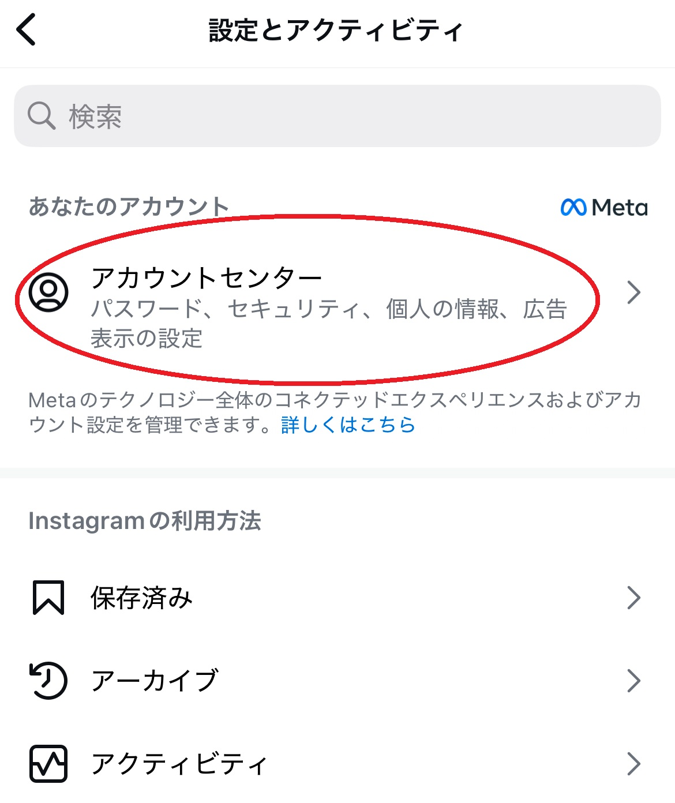
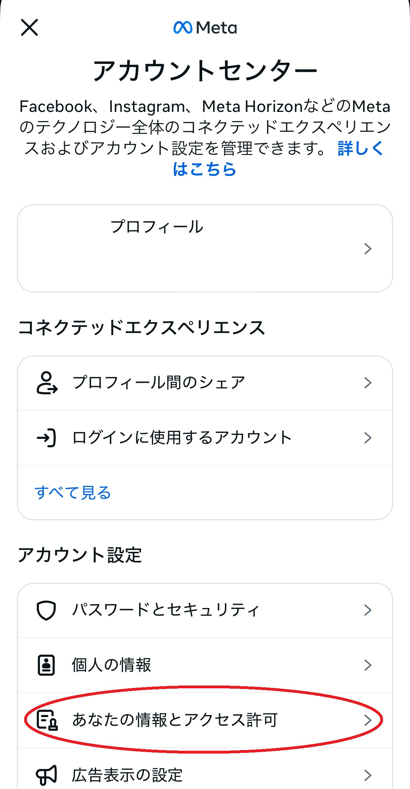
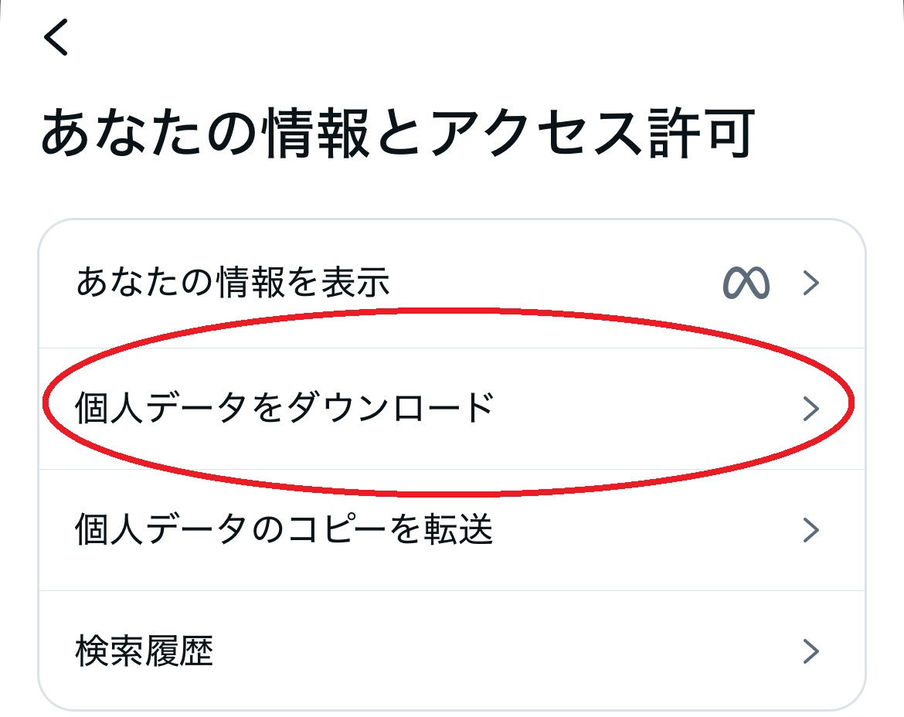
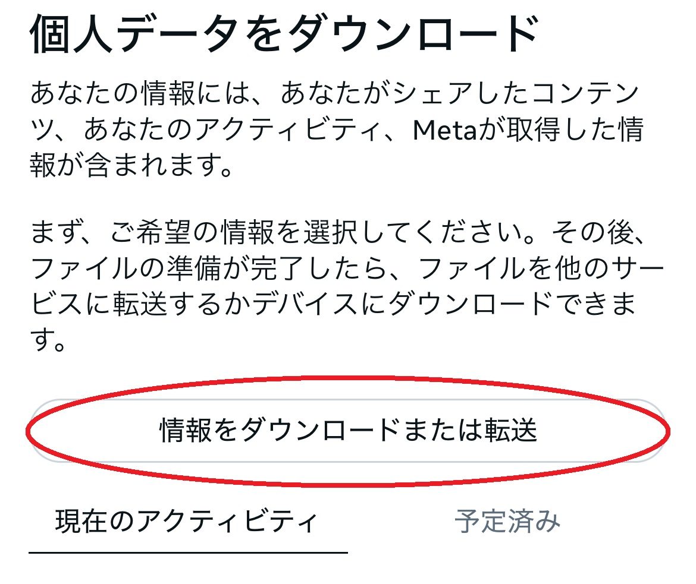
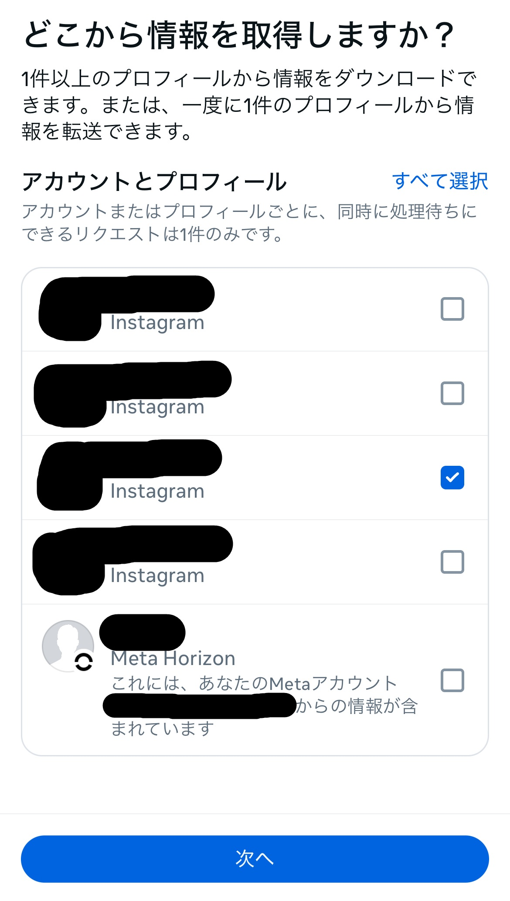
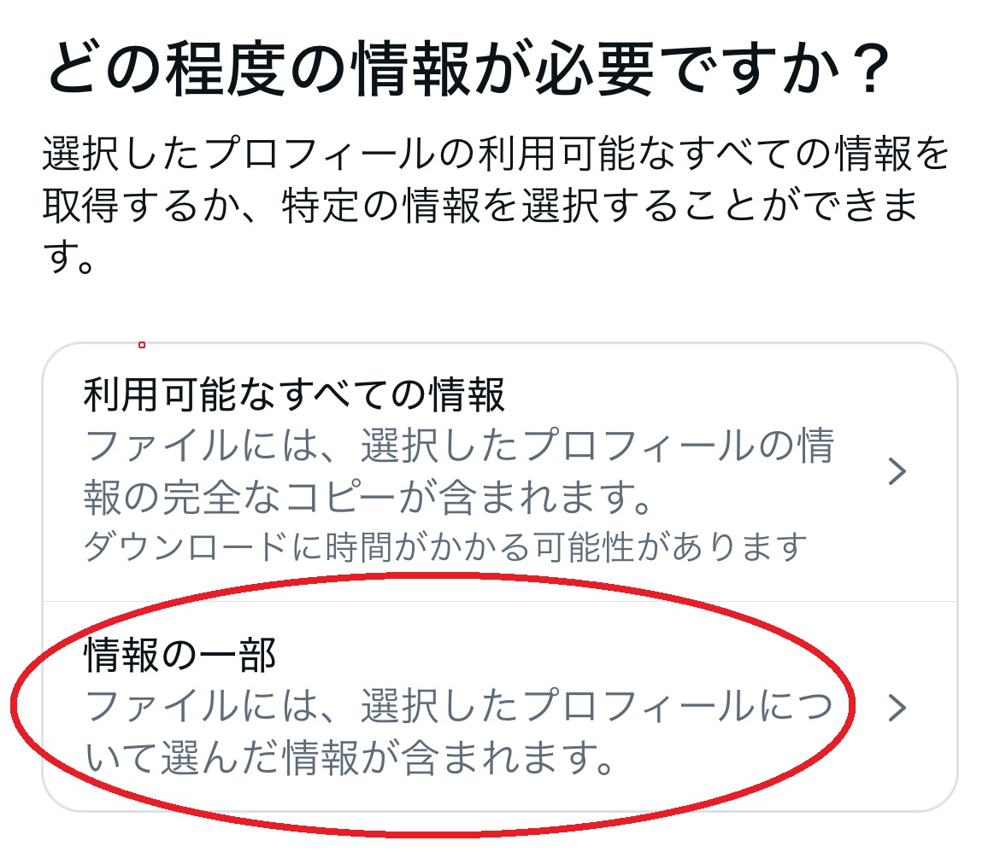
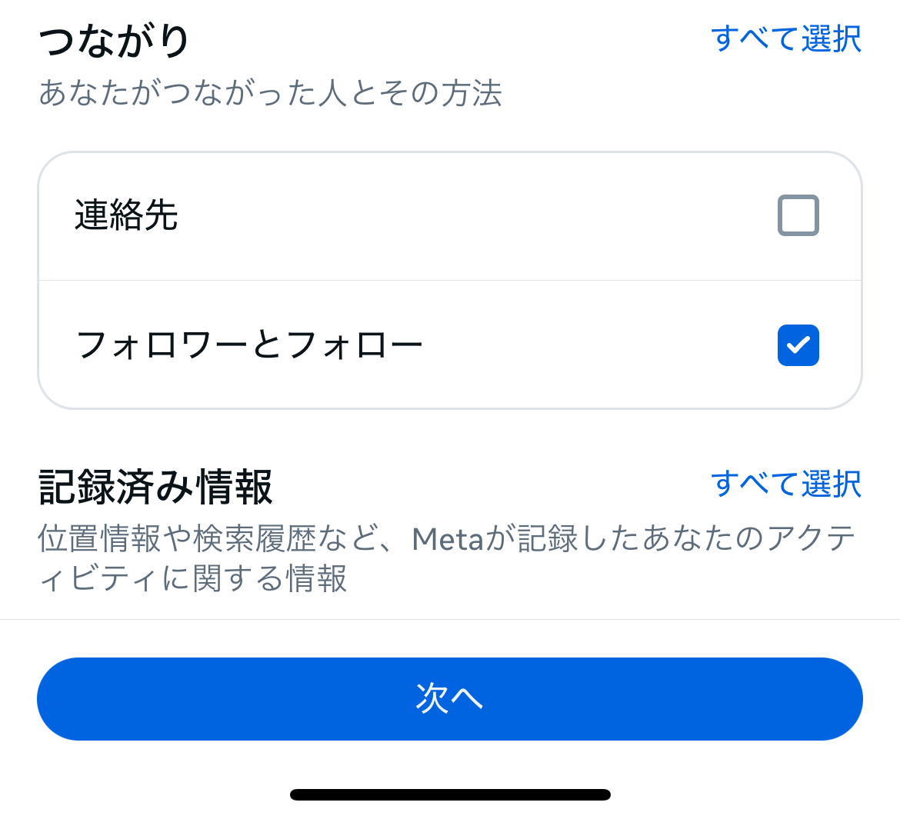
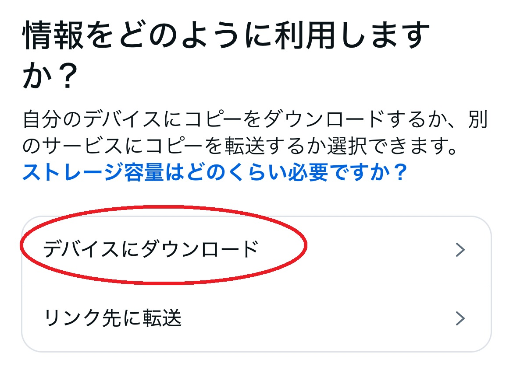
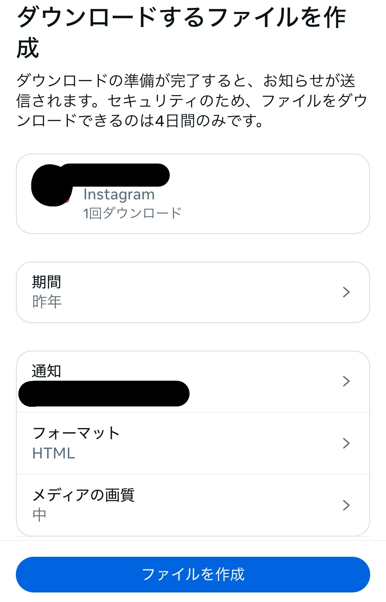
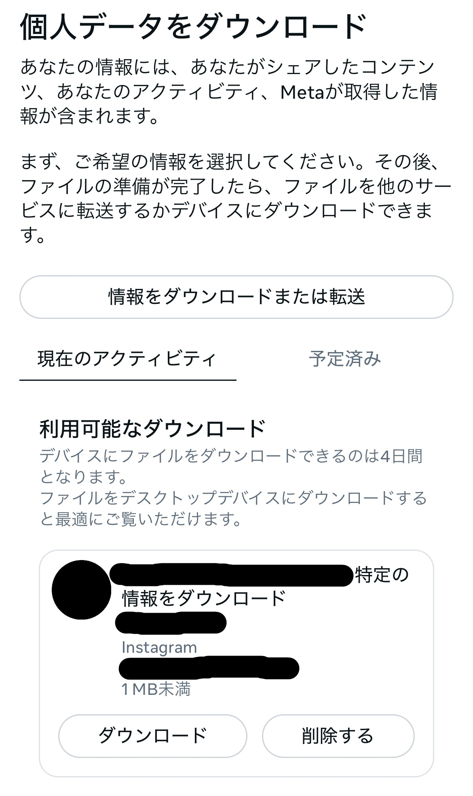

Instagramからデータをダウンロードするには、以下の手順に従ってください。
- Instagramにログインし、右上の ☰ をクリックします。
- 一番上の「アカウントセンター」タブに移動します。

- 「あなたの情報とアクセス許可」タブに移動します。

- 「個人のデータをダウンロード」タブに移動します。

- 「情報をダウンロードまたは転送」を選択します。

- 「どこから情報を取得しますか？」という画面になるので自分が調べたいアカウントを選択し、「次へ」をクリックします。

- 「どの程度の情報が必要ですか？」と聞かれます。ここではフォローフォロワーの情報のみ必要なので情報の一部をクリックします。

- スクロールするとつながりの項目があるので、「フォロワーとフォロー」にチェックし、次へをクリックします。

- 「情報をどのように利用しますか？」と聞かれるのでデバイスにダウンロードを選択します。

- 必要な期間を選択したら、ファイルを作成をクリックします。

- ファイルの準備が完了すると、メールとInstagramのお知らせが届きます。
アカウントセンターまたはInstagram
の設定の[個人データをダウンロード]ページにある[利用可能なダウンロード]セクションから情報をダウンロードできます。

- ダウンロードしたZIPファイルを本サイトでアップロードするとで調べることができます。